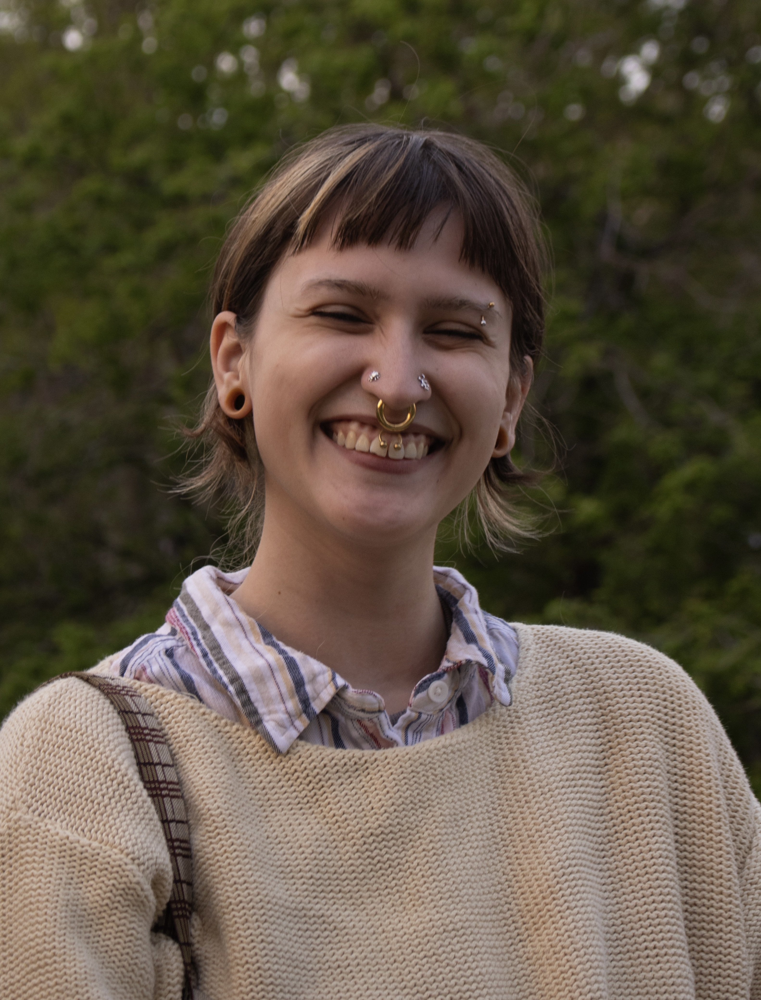

Sofia Ortega (they/he) is a Venezuelan-American multidisciplinary artist and educator based in Columbia, MO. The generational exchange of learned behavior through domestic ritual informs their work and follows memory as a testament to ancestry, adolescence, and cultural identity stitched together across various mediums. Ortega holds a BA in Digital Storytelling and a minor in Art from the University of Missouri-Columbia. In his time there, he spent a year with the ASH Scholars: Art of Death Undergraduate Research team, who went on to win an Award for Artistic Expression at MU’s Show Me Research week. He also received an Award of Merit for Artistic Expression from the School of Visual Studies and an Outstanding Student Award from the Surface Design Association. Ortega has exhibited work for Columbia Art League, Ellis Library, the University of Iowa, Show Me Research Week, and Digital Graffiti Festival in Alys Beach, FL. They are the current Fiber Artist-in-Residence at Access Arts.